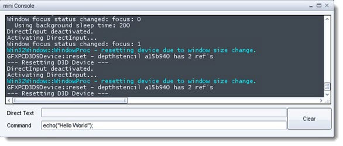
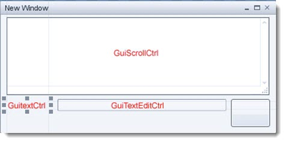
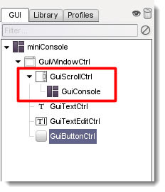
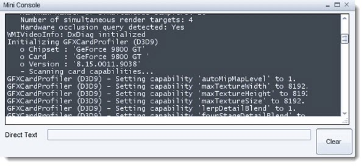

Introduction

This is a simple tutorial to create a mini Console in a window,
complete with clear button. You will use a small amount of script to
make a toggle key for the mini-console and also look at how to use the
text entry box.
Suggested Reading:
Covered in this tutorial:
- How to setup a small console
- Set up a clear button
- Bind this dialog to a key
- Learn how to use Text entry
- Take a Look at profiles and what they are
Setting Up
By now you should be use to the setup procedure. Open your tutorial
project and head to the GUI editor or alternatively use
the Torque 3D Toolbox approach. Create a new GUI using the following:
New GUI Name: miniConsole
Gui Class: GuiControl
Select the GuiControl and set its property profile to GuiModelessDialogProfile.
NOTE: The GuiModelessDialogProfile sets our GUI so that the
background does not prevent mouse events from reaching objects beneath
it. Simply put, the user can click through the clear parts.
Select a GuiWindowCtrl from the library, add it to the editor work area, and resize so that it can contain the console.
Add the Controls
STEP 1: The next task is adding the controls to our window.
Select the GuiWindowCtrl control from the controls list so that it is
highlighted and add the following controls:
GuiScrollCtrl
GuiTextCtrl
GuiTextEditCtrl
GUiButtonCtrl
Move and resize the controls so that they match the image below (text in red is to show where each control is):

Save your GUI into your project game/art/gui folder with the name of miniConsole.gui. Next we need to set some control properties as follows:
GuiWindowCtrl property text: Mini Console
GuiTextCtrl property text: Direct Text
GuiButtonCtrl property text: Clear
STEP 2: Select the GuiScrollCtrl control as we are going use it
as a container for our console. With the scroll control selected add a
GuiConsole from the Editor category. In the controls list, the new
console control should be nested inside the scroll control. Do not
worry about resizing the console control. The scroll box will handle
its size.

This will enable us to scroll through the console as it is
larger than our window. If you preview your GUI (F10) you will notice
that the color is wrong for the console and also the window may be a
little to narrow. We can rectify this by changing the GuiScrollCtrl
profile to ConsoleScrollProfile and resize the window and scroll
control horizontal width.
You may have to move the other GUI components so that it looks tidy again.

Do not forget to save often!
The GuiTextEdit Control
What we are going to do now is make our text edit control send its
contents to the console when we press enter. Basically echo to the
console what we type into the text edit control. First set the Clear
button property to:
button property Command: cls();
| cls() |
Use the cls function to clear the console output.
Syntax
cls()
Returns
No return value
Examples
cls();
|
Now when we press this button the console will be cleared. We can now test the GUI by closing the GUI Editor, press F10 and try it out.
GuiTextEditCtrl property name: txtDirect
GuiTextEditCtrl property AltCommand: echo(txtDirect.getValue());
| echo(string,all) |
Sends output to the console
Syntax
echo(string text, all [...]);
- text: Text sent to console
- [...]: Optional value, of any type, that will be appended to the text
Returns
No return value.
Examples
// Print "Hello World" in the console
echo("Hello World");
|
You may have noticed that this time our command was placed into
the AltCommand property, the reason for this is so that the control
waits until we press enter to send the command string, instead of
sending the command on each letter entered.
It would be good that when we pressed enter that the text
edit control emptied itself, to save us having to highlight and delete
the text ourselves next time we want to enter a new word. Change the
property as follows:
GuiTextEditCtrl property AltCommand: echo(txtDirect.getValue()); txtDirect.setValue("");
Now when you enter a word and press return the word is
displayed in the console and the text is removed from the edit box. Now
is a good time to save.
Commanding the Console
To do this we are going to need a new text edit control and a text
label. Select our GuiTextCtrl and GuiTextEditCtrl, then copy and paste.
Move the new copy beneath the first. Change the copied controls
properties as follows:
GuiTextCtrl property text: Command
GuiTextEditCtrl property name: txtEnterCommand
GuiTextEditCtrl property AltCommand: eval(txtEnterCommand.getValue()); txtEnterCommand.setValue("");
The first command in the script sends the contents of the
text edit control txtEnterCommand to the console to be executed. The
following then clears the text ready for the next command to be
entered.
| eval(script) |
Use the eval function to execute any valid script statement
Syntax
eval(string script);
- script: A string containing a valid script statement. This may be a single line statement or multiple lines
Returns
const char* Returns the result of executing the script statement.
Examples
eval("game/scripts/client/test.cs");
|
Note: If you choose to eval a multi-line statement, be sure
that there are no comments or (\\) comment blocks (\**\) embedded in
the script string.
Your mini Console should now look a little like this.
Activating the Console
STEP 1: We are going to call our new console from Ctrl + ~ (tilde) to keep inline with the main console.
Open the file scripts/client/default.bind.cs in Torsion or another text editor. Head to the end of this file and add the following:
function callMiniConsole(%val )
{
if(%val )
{
if ( miniConsole.isAwake() )
{
// close the mini console.
Canvas.popDialog( miniConsole );
}
else
{
//open the mini console
Canvas.pushDialog( miniConsole );
}
}
}
GlobalActionMap.bind(keyboard, "ctrl tilde", callMiniConsole);
This function allows us to use the same key press to open / close the dialogue by checking the GUI status guiControl.isAwake.
STEP 2: Next open the file game/scripts/client/init.cs and look for the // Execute the GUI scripts and functions section and add the following:
exec("art/gui/miniConsole.gui");
Now run your project and press the Ctrl + ~ (tilde) key to see your mini Console.
STEP 3: One last edit to be made with our GUI, to enable the window close icon:
GuiWindowCtrl property closeCommand: Canvas.popDialog(miniConsole);
Remember to save before testing the close icon.
NOTE: If you want to use this as a project console you may
remove the direct text control leaving the command text and text edit.
This would be more useful as the first Text edit control was for
instruction purposes only.
Conclusion
In this tutorial, you learned the following concepts:
- How to setup a small console
- Set up a clear button
- Bind this dialog to a key
- Learn how to use Text entry
- Take a look at profiles and what they are
The next tutorial will show you how to display a GUI while playing
the game, which is the foundation for creating a HUD (Heads Up
Display).
|